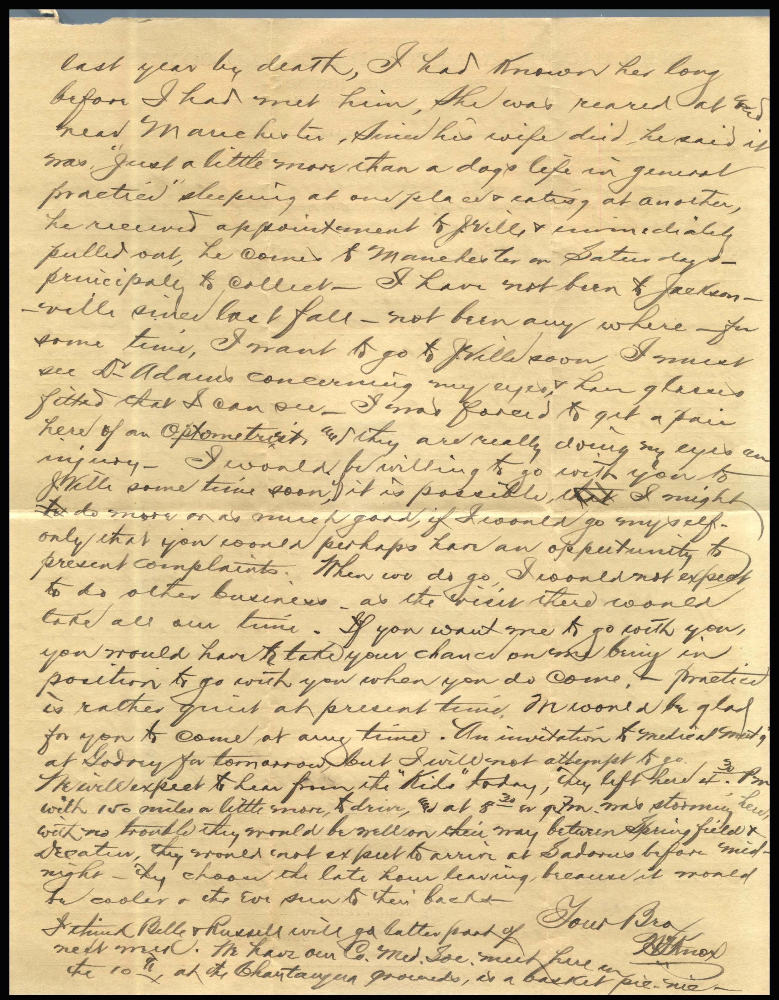
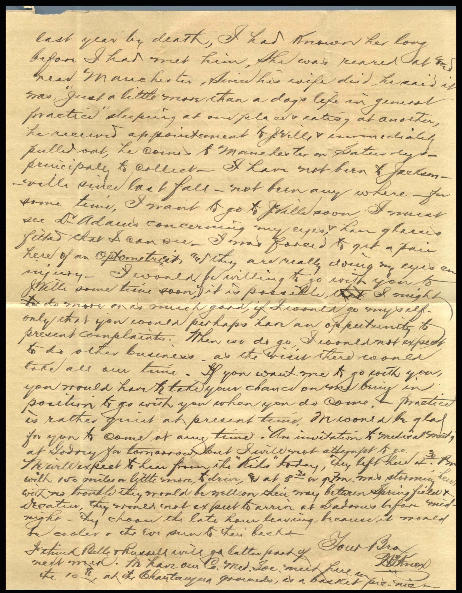

From: N.J. Knox, To: Jeanette Knox Chandler
 
 From: N. J. Knox, To: Jeanette Knox Chandler
Mailed From: White Hall, Ill. on June 3, 1927
From: N. J. Knox, To: Jeanette Knox Chandler
Mailed From: White Hall, Ill. on June 3, 1927
Miss E. H. Chandler Pearl, Ill.
After 5 Days Return to Greene County Medical Society White Hall, Illinois
Sister & family! Yours received and glad to hear from you and to know all are well. Very sorry indeed to hear of sister Annie's illness. I am guessing her trouble to be Bronchitis- instead of Pneumonia, or Broner's - Pneumonia as it is the wrong time of year for Pneumonia. Bronchitis is trouble enough. I hope when you hear again she will be better. Ruby sure did make some time, that was going some.Loren and he girls will have a great time on their trip to Dunlop and return and when two or more traveling over-land on a trip of like distance it is a great saving of time and expense to go prepared to camp. Mr. & Mrs. J.C. Spencer drove to California last year, was in a home here, and only don't know whether they were alone or not, think they were, but they camped all the way and enjoyed it, saw so much of the county. The general health during winter and to present time has been good, although quite a number of old chronic cases ave passed away o late. Mr. Fox has been very busy some days with calls near towns and here would have 3 on hand in one day. I don't believe his auto hearse was on to Pearl lately, that may have been - it goes to Jacksonville, Manedesto, Roadhouse, and Carrollton frequently. Russell is helping him and has done so on Saturday or other times when not engaged at school - he expects to go to college this fall. Lucile and Brausford drover here from Sadores on Monday for the commencement, they returned Wednesday afternoon today, Kenneth with them. We miss him so much. He will go to 8th grade in Junior High next year. I would proved some way of securely marking plain letters, all clothes - even shoes you take to Annie. They are stolen and would not be so liable to be taken when marked. That last two patients by death, recently, Mrs. Griswalk and Mrs. Staples. The latter was a large woman and as strong as an ox. Bright's disease with cancer of stomach is back. I know Dr. Lucas, now at the State Institution, he supervised me at Manchester, lost his wife last year by death. I had known her long before I had met him. She was reared near Manchester. Since his wife died, he said it was "just a little more than a dog's life in general practice" sleeping at one place and eating at another. He received appointment to Jacksonville and immediately pulled out. He comes to Manchester on Saturdays - principally to collect. I have not been to Jacksonville since last fall - not been any where for some time. I wasn't to go to Jacksonville soon. I must see D. Adams concerning my eyes and have glasses fitted that I can so. I was forced to get a pair here of an optometrist, and they are really doing my eyes an injury. I would be willing to go with you to Jacksonville some time soon, if it is possible I might do more or as much good, if I would go myself - only that you could perhaps have an opportunity to present complaints. When we do go, I could not expect to do other business - as the visit there would take up all of our time. If you want me to go with you, you would have to take your chance on me being in position to go with you when you do come. Practice is rather quiet at present time. I would be glad for you to come at any time. An invitation to Medical Grants at Sidney for tomorrow, but I will not attempt to go. We will expect to hear from the "kids" today, they left there at 4:30 pm with 150 miles or a little more to dive and at 8:30 it was storming here. With no trouble they should be well on their way between Springfield and Decatin, they would not expect to arrive at Sadonia before midnight. They choose the last hour leaving, because it would be cooler and the eve sun to their backs. Your Bro, N.J. Knox I think Belle and Russell will go latter part of next month. We have our Company Medical School much here on the 10th at the Chaytagun grounds, as a basket pit. Nice.